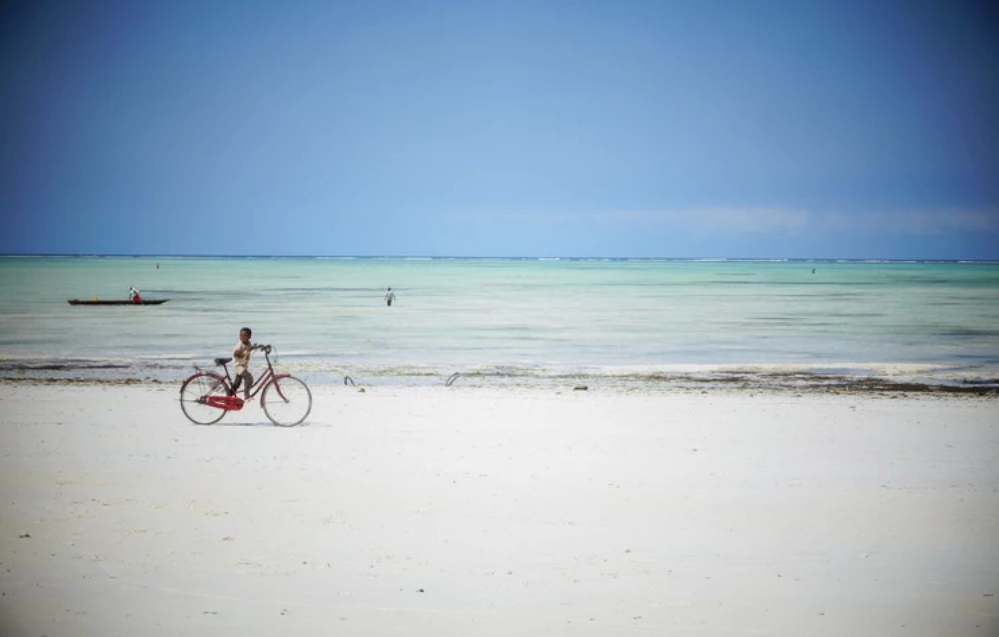

Zanzibar

Founded just off the eastern coast of Africa, Zanzibar is the largest island in Tanzania and is found just a short boat ride away from the mainland, and the Tanzanian capital of Dar es Salaam. Zanzibar has something for everyone, and there are a great many great things to do in Zanzibar and to experience across the island, from beach bathing to exploring museums.
Stroll Around Stone Town
Stone Town is Zanzibar’s historic center. It’s the old part of what is now the modern Zanzibar City, and it’s recognized as an important UNESCO World Heritage Site.
Stone Town can trace its origins back hundreds of years, but most of the current buildings date to the 19th century when the British used the city as their base in the region.

Paje
Paje is another sleepy fishing village, that has recently become popular with kite surfers due to the windy coastline here. It’s in beautiful surroundings along the eastern shore, with a few rustic lodgings and restaurants, and spectacular scenery.
Prison Island
Prison Island, also known as Changuu, is a small, idyllic white sand island that is found just off the coast of Stone Town. It looks like paradise, but for many escaped slaves in the 19th century, it became their prison if they were recaptured.
Today though, the island is better known as the home of a large population of giant tortoises that were given as a gift to Zanzibar and have since flourished.